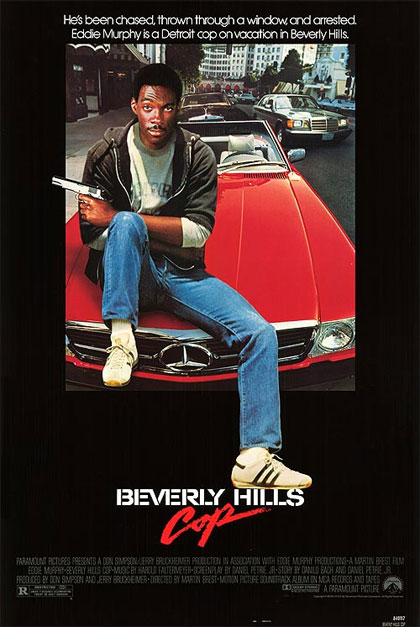
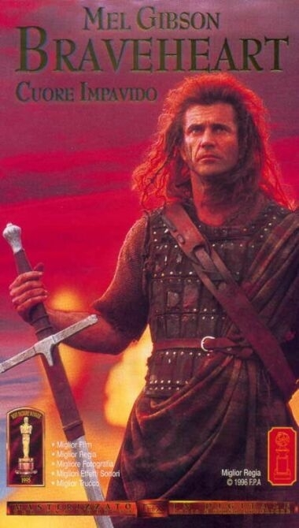

Rocky
Anno: 1975
Genere: Sportivo
Valutazione: 9.5

Indiana Jones
Anno: 1985
Genere: Azione
Valutazione: 6.5

Jurassic Park
Anno: 1993
Genere: Fantascienza
Valutazione: 8.5

Ghostbusters
Anno: 1984
Genere: Fantascienza
Valutazione: 8

Beverly Hills Cop
Anno: 1984
Genere: Azione
Valutazione: 9
Il Padrino
Anno: 1972
Genere: Dramma/Gangster
Valutazione: 10

Rambo
Anno: 1982
Genere: Azione
Valutazione: 7.5

Scarface
Anno: 1983
Genere: Dramma/Gangster
Valutazione: 9

Braveheart
Anno: 1995
Genere: Biografico
Valutazione: 8
Lo chiamavano Trinità
Anno: 1970
Genere: Western
Valutazione: 9